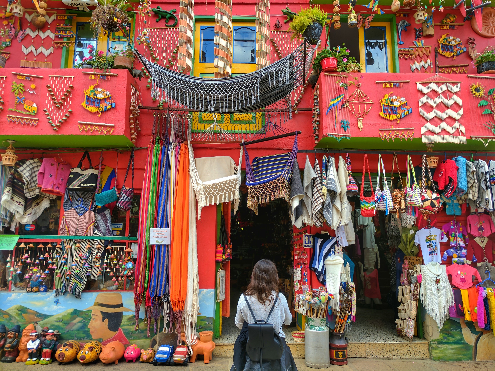
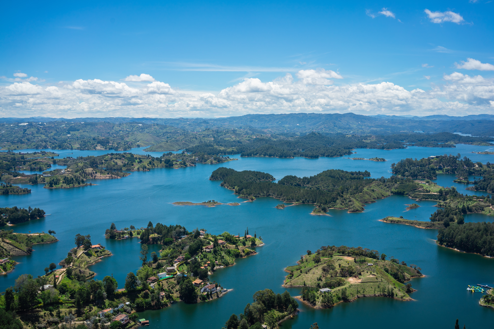
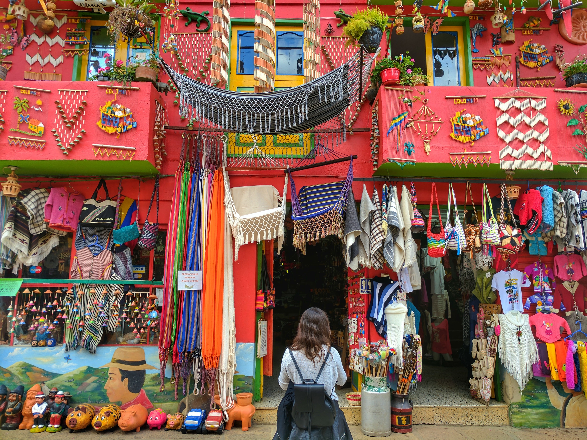
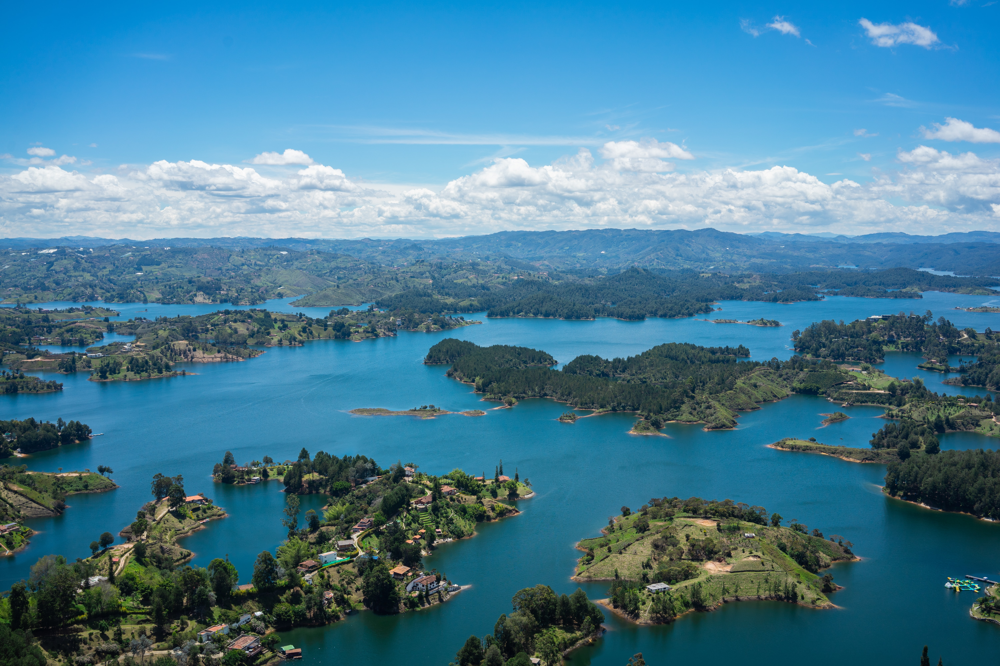

Bienvenue en Colombie
1Géographie
Géographie, localisation, relief, climat, hydrographie, sources et rivières, cartes de la Colombie.
2Histoire de la Colombie
Histoire de la Colombie, premiers colons, indépendance, campagne de libération, république.
3Artistes colombiens
Musique colombienne, origines, rythmes, paroles de chansons, musique midi, Cumbia, Vallenato.
4Gastronomie
Gastronomie colombienne, plats typiques et repas de certaines régions.
 



Diversite
Fruits tropicaux
Fruits tropicaux
La Colombie possède une grande variété de fruits tropicaux (banane, avocat, citron, ananas et mangue) et exotiques (groseille, gulupa, pitahaya, grenadille) qui sont largement acceptés sur le marché international. De plus, le pays bénéficie de la grande diversité des conditions topographiques et climatiques, qui permettent de récolter une grande variété de fruits tout au long de l'année. Les fruits colombiens ont une excellente qualité en termes organoleptiques avec l'une des meilleures couleurs, saveurs, arômes, teneur en soluble et valeur BRIX, par rapport aux produits d'autres pays de la région subtropicale.
Bandeja Paisa
Bandeja Paisa
Bandeja paisa est une recette traditionnelle d'Antioquia, en Colombie. Un plat avec beaucoup de fondement : il contient de la viande, des haricots, des plantains, de l'avocat, des œufs au plat et une délicieuse sauce colombienne appelée hogao. Si vous aimez essayer des recettes de ragoût de différents pays, ne manquez pas la paisa bandeja colombienne, à Cocina Casera, nous vous expliquons étape par étape.
Le Tamale
Le Tamale
Le tamale est l'une de ces préparations dont chaque région du pays est fière de son propre tamale, à Santander, à Bogotá, à Cartago, à Santa Fé de Antioquía, à Quibdó, etc. Il existe des tamales ronds et carrés, et leur préparation varie selon les régions et les communes. Maintenant, le tamale est un aliment qui a été connu pour la première fois dans les chroniques "L'histoire générale des choses en Nouvelle-Espagne", par le religieux espagnol Berardino de Sahagún, qui a décrit le tamale comme un emballage de pâte de maïs consommé par les indigènes.